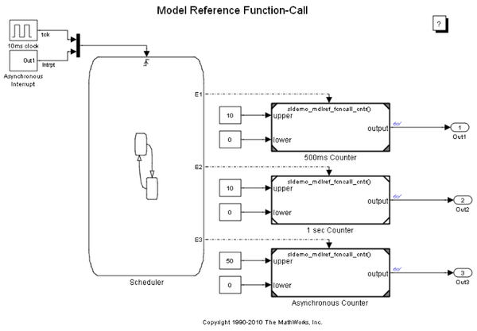

Model Reference Function-Call
This demo illustrates a model reference block which is explicitly triggered by means of its function-call trigger port.
Contents
Demo Requirements
During this demo, Simulink® generates files in the current working directory. If you do not want to generate files in this directory, you should change the working directory to a suitable directory.
Open Demo Model
If you haven't already opened it, open the demo model.
Model Referenced Function-Call
This model contains three Model blocks: 500ms Counter, 1 sec Counter and Asynchronous Counter. These blocks reference the same model sldemo_mdlref_fcncall_cntr. The model blocks represent saturating counters which increment their output values by one each time they are explicitly triggered through their function-call trigger ports. The Stateflow® Chart Scheduler calls each Model block at its specified rate.
Simulate the Model
Now you can simulate the model sldemo_mdlref_fcncall and verify the behavior of the counters by examining the results displayed on the scope blocks.
